It's very recommended to watch this video from the Hummingbot Foundation and their installation guide:
Install Git to be able to clone the repository:
sudo apt install git
sudo dnf install git
sudo yum install git
brew install git
Open the shell terminal, use the "cd" command to navigate to the folder where you want to clone the repository and run the command below:
git clone https://github.com/funttastic/kujira-quickstart-guide.git
Open the repository folder with the command below:
cd kujira-quickstart-guide
Using the command below, start the script that will help you perform the installation:
./configure
When you run the script, you will see the main menu screen as shown below:
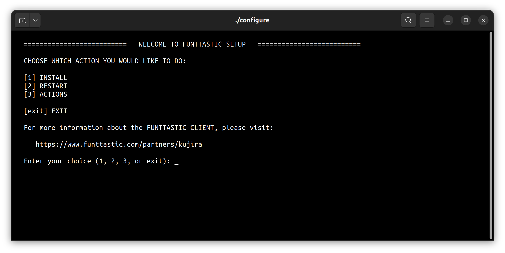As shown in the image below, select the [1] INSTALL option by typing "1" and press Enter.
Set your custom username or press Enter without typing anything to set "admin". Then type your password twice to set it. Set a strong password, longer than 4 digits but easy to remember.
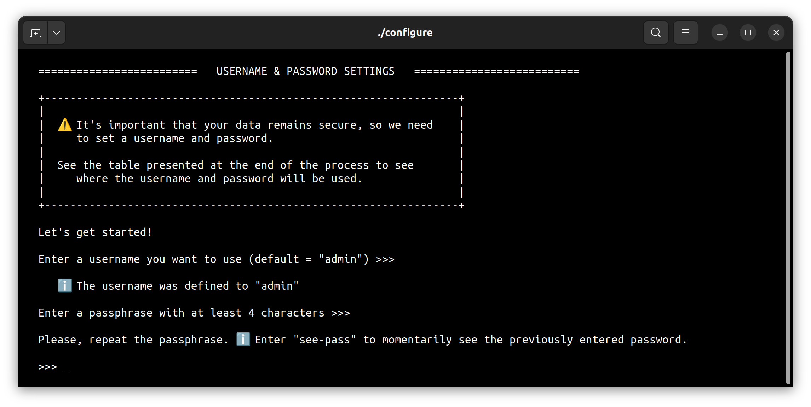The next question must be answered carefully. This option affects security or ease of use.
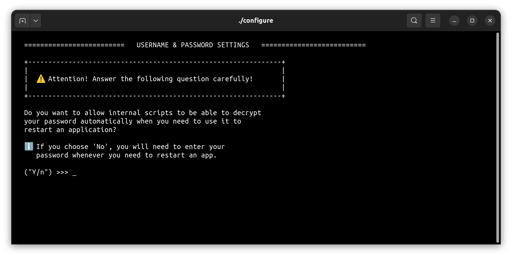A table will be shown to inform where the credentials will be used. Press any key to continue.
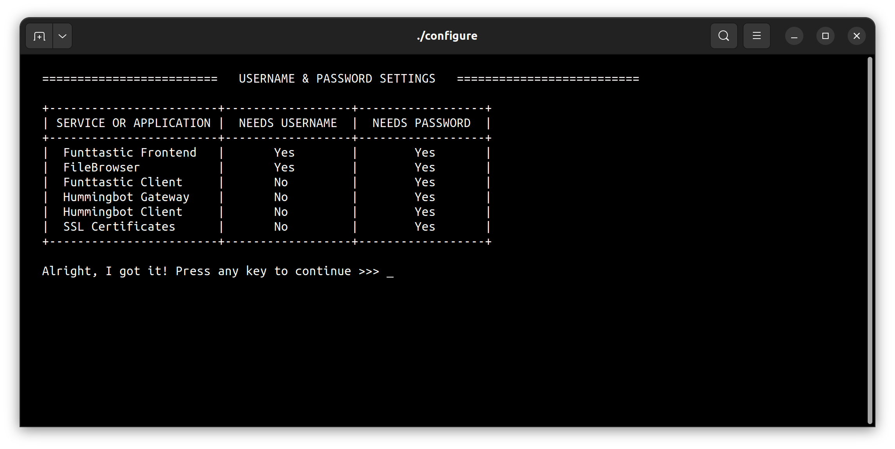You will be asked if you want to automate the entire installation process.
If you choose "Yes", which is the recommended option, or just press Enter without typing anything, the installation will be done using default settings and will begin immediately.
If you choose "No", you will need to answer further questions to create the entire installation configuration and at the end you can review the settings and then press Enter once again for the installation to begin.
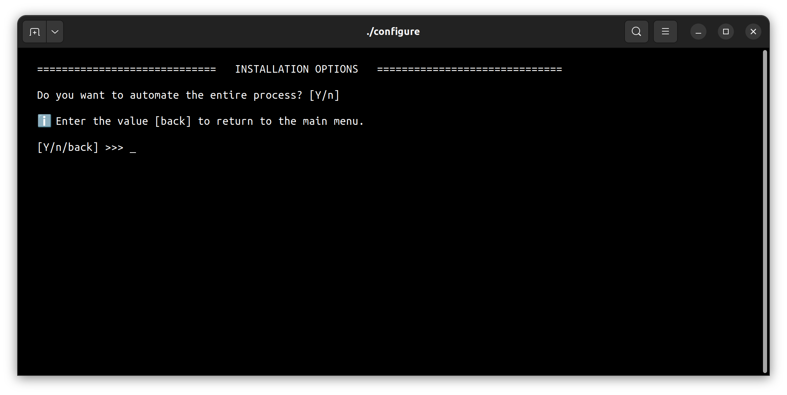If you choose automated installation mode, the process will start as shown below, otherwise you will be asked further questions:
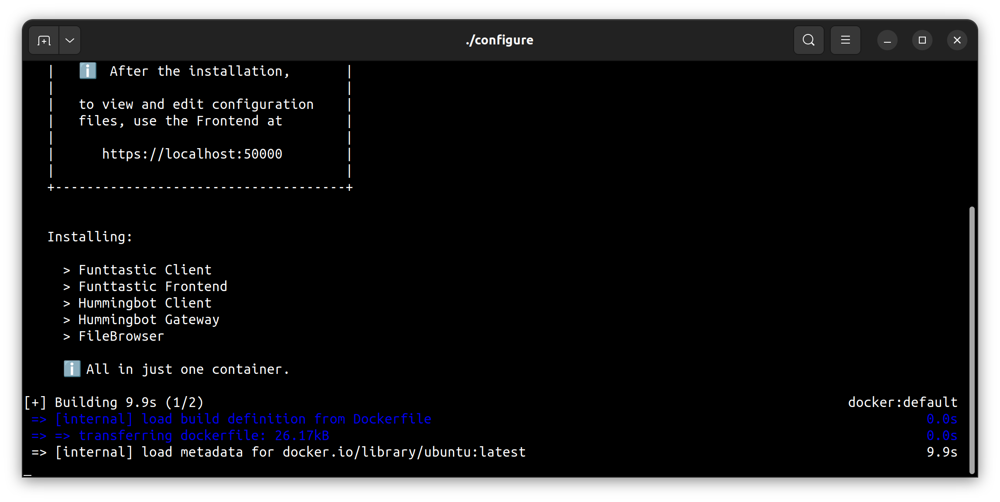Select the [3] ACTIONS option by typing "3" and press Enter.
Select the Docker container that was created during installation.
The default name is fun-kuji-hb - if you defined a different name during installation, type that name and press Enter, but if you didn't define a different name or are unsure, just press Enter to use the default name:
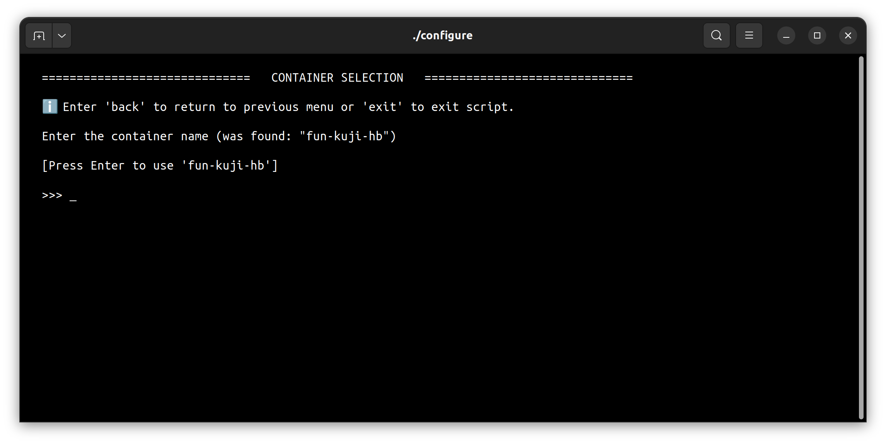To open the Frontend, select the [7] OPEN FUNTTASTIC FRONTEND option by typing "7" and press Enter.
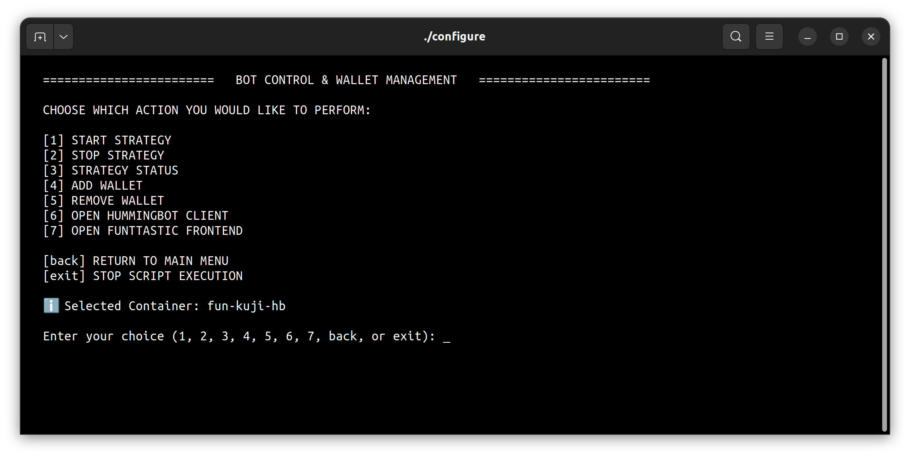When you choose the option to open the Funttastic Frontend, it will open in your web browser, or you can use the URL http://localhost:50000/.
You will see a screen as shown below.
Enter your username and password defined during installation.
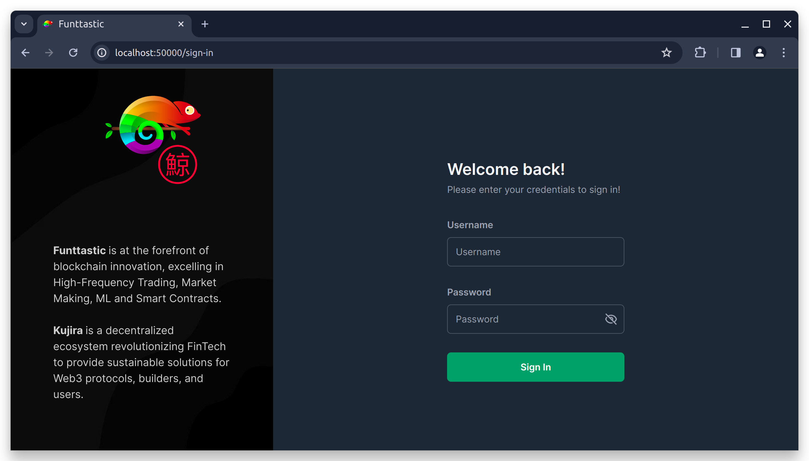After you log in, you will see the screen below:
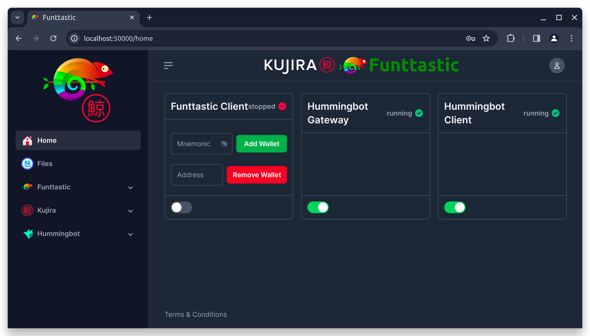When you created your wallet, a set of words was generated, probably 12 words. This set of words is called Mnemonic.
In the mnemonic field, highlighted in the image below, add your wallet mnemonic and click the Add Wallet button:
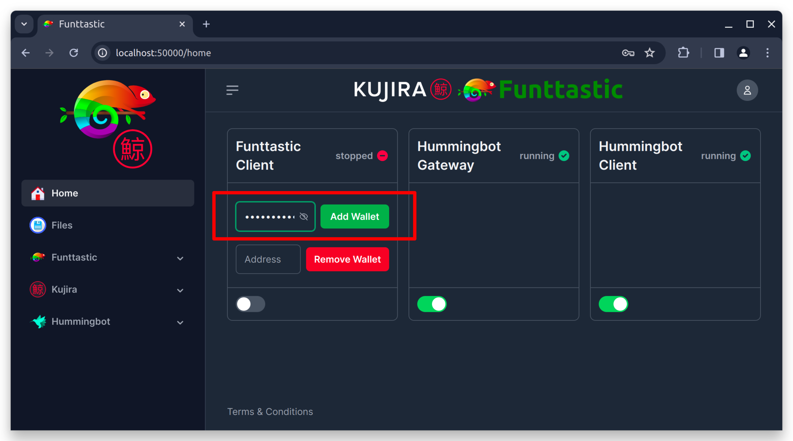After you click on the Add Wallet button, wait a few seconds until a pop-up window appears with the message "Wallet added successfully", as you can see in the image below, indicating that the wallet has been added and can now be used.
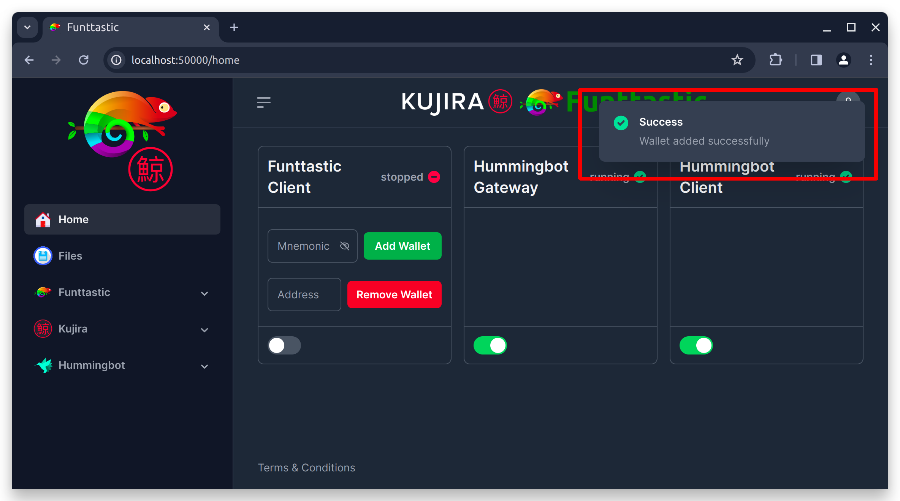If you want, you can confirm the wallet addition using Filebrowser. To do this, in the Frontend left side menu, choose "Files", enter your username and password to log in:
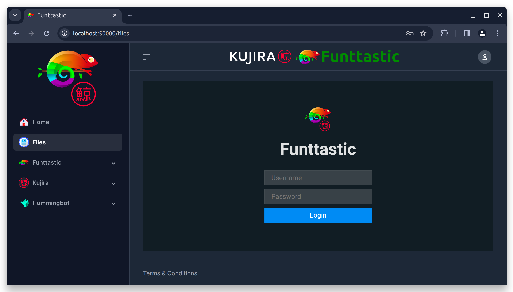When you add a wallet, it will be added to the Hummingbot Gateway and Hummingbot Client files.
In Hummingbot Gateway, for each wallet added, there will be a .json file in the directory:
shared/hummingbot/gateway/conf/wallets/kujira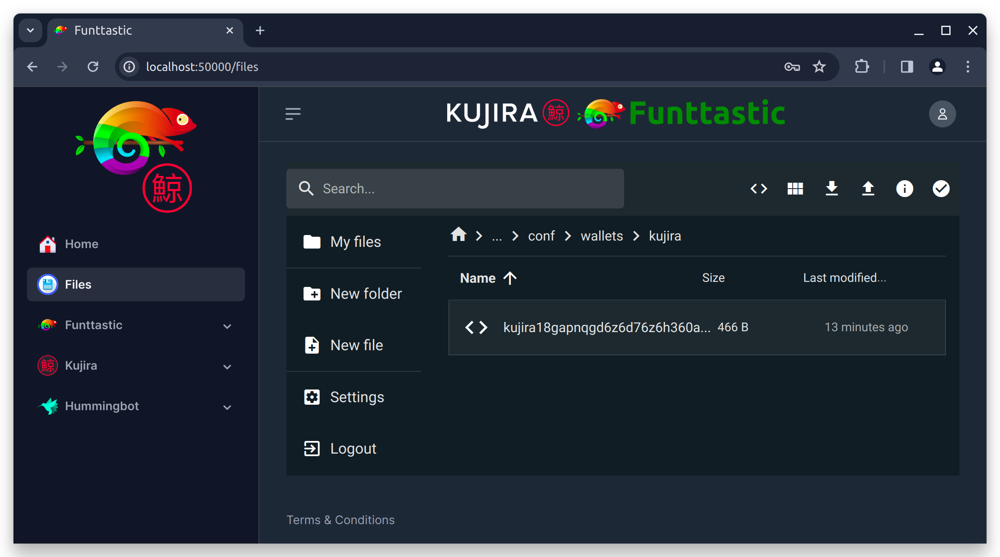
In the Hummingbot Client, when you add a wallet, it will be added to the mainnet and testnet networks in the shared/hummingbot/conf/gateway_connections.json file and due to how the Hummingbot Client works, whenever you add a new wallet to the same chain, this new wallet will replace the wallet that was previously added, so for the Hummingbot Client, each chain can only have one wallet, but for the Hummingbot Gateway, there can be indefinite wallets added.
Unlike Hummingbot Client, Funttastic Client will be able to handle all the wallets you have added to Hummingbot Gateway.
Using Filebrowser through Frontend, access the following directory to access the strategy configuration files:
shared/funttastic/client/resources/strategies/pure_market_making/1.0.0
There you can configure your Supervisor (supervisor.yml) and your workers (workers/01.yml, etc.).
You can use the workers/common.yml file if you want a configuration to be replicated to all your workers.
If a specific worker has a different configuration, the worker configuration will then apply.
By default, there are already configuration files for three workers in the workers folder.
If you want more workers, just duplicate any of the worker configuration files and change the id in the settings within the file to an id that is not in use.
For both the file names and their internally defined ids, you can define whatever name you want, just keep the .yml extension.
If you don't want to use any of your workers, you don't need to remove their configuration files, just disable it in the supervisor configuration file, as we will see later.
But if you want to completely delete the configuration file of one of the workers, no problem, you can remove it. Just make sure to disable his id in your supervisor settings.
When you open some worker configuration file, you will see something like below:
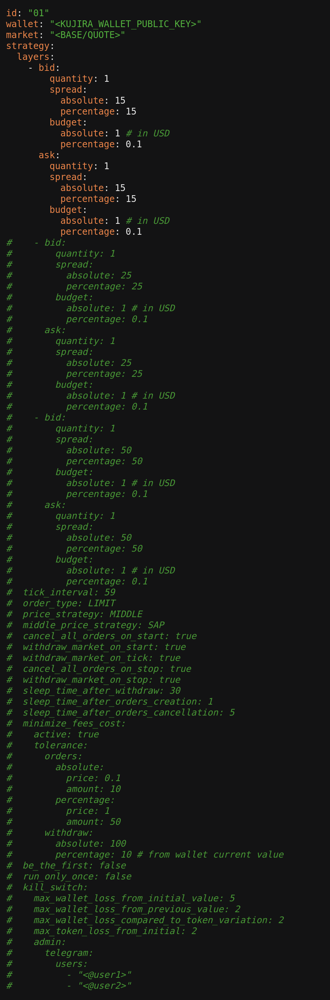In the other image below, there is an example of a configured worker.
Below the image read some explanations about some defined parameters:
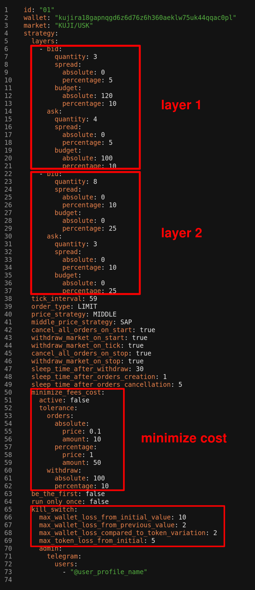Line 1: id - here you must define the id of the worker. For simplicity, a numeric id was defined there, but you can define any name you want, just avoid special characters and spaces.
Line 2: wallet - here you must add the public key of your wallet. This public key must be derived from the same mnemonic that you used or will use to add your wallet through Add Wallet on the Home page of the frontend.
Line 3: market - here you must define the market in which this worker will work. In this example, the KUJI/USK market was defined. The markets you will be able to trade on will be the markets available for mainnet and testnet on Kujira's FIN at https://fin.kujira.network/. The name pattern normally consists of two symbols written in capital letters separated by the symbol "/". If in doubt, open the market on FIN and look at the name of the pair in the page title.
LAYERS:
See in the image above that 2 layers were defined. The main reason for allowing the creation of multiple layers is to define different spread levels for the same worker. You can add as many layers as you want.
If you want to add more layers, copy another existing layer and paste it below it and then change the values. If you want to deactivate a layer without deleting it completely, just comment on the layer's lines by adding the symbol "#" at the beginning of its lines, on the left side.
Each layer has a "bid" side and an "ask" side. If you want, you can define different quantity, spread, and budget values between sides.
Some settings can be made using absolute values or percentage values. Absolute values will prevail over percentage values. To understand better, consider for example the spread configuration on the bid side of layer 1 - if you define a value greater than zero for absolute, regardless of the value you define in percentage, the absolute value that will be considered, so if you want the percentage value to be considered, set the absolute value to 0 (zero) or null.
Summary:
In this example configuration, layer 1 is saying:
To understand in detail, look at layer 1 - see that for bid the value 3 was defined for quantity, the value 0 for spread. absolute, the value 5 for spread. percentage, the value 120 for budget. absolute and the value 10 for budget.percentage.
As explained previously, if the absolute value is greater than zero, it will be considered and the percentage value will be ignored.
Bid Side:
In spread, as the value 0 was defined for absolute and the value 5 for percentage, it means that the spread will be a percentage, that is, the orders will have their prices defined with a percentage distance in relation to the market price, in this example 5%. If a value greater than zero had been set for spread. absolute, the distance from the market price would be calculated using a fixed value.
In budget, both for absolute and percentage values greater than zero are defined, but the percentage value will be ignored, so the budget considered will be 120 tokens USK. If budget. absolute had been set to 0 or null, the budget would be 10% of the total amount of USK tokens in your portfolio.
In quantity, the value 3 was defined, so the budget defined for 120 would be divided into 3 parts, so each purchase order (bid) of layer 1 will have an amount of 40 USK.
Ask Side:
In spread, the settings are identical to what was configured for the bid side, so the explanation is the same.
In budget, the explanation is almost the same as the explanation given for the bid side, the difference is the amount. Now there are 100 USK tokens that will be divided by the number of orders that will be created.
In quantity, the value 4 was defined, so the budget defined for 100 would be divided into 4 parts, so each sell order (ask) of layer 1 will have an amount of 25 USK.
Summary:
In this example configuration, layer 2 is saying:
To understand in detail, look at layer 2 - See that for bid the value 8 was defined for quantity, the value 0 for spread. absolute, the value 10 for spread. percentage, the value 0 for budget. absolute and the value 25 for budget.percentage. Also see that for ask the value 3 was defined for quantity, the value 0 for spread. absolute, the value 10 for spread. percentage, the value 0 for budget. absolute and the value 25 for budget.percentage.
As explained previously, if the absolute value is greater than zero, it will be considered and the percentage value will be ignored.
Bid Side:
In spread, as the value 0 was defined for absolute and the value 10 for percentage, it means that the spread will be a percentage, that is, the orders will have their prices defined with a percentage distance in relation to the market price, in this example 10%. If a value greater than zero had been set for spread. absolute, the distance from the market price would have been calculated using a fixed value.
In budget, as the value 0 was defined for absolute and the value 25 for percentage, it means that the budget will be a percentage in relation the free amount of USK available in the portfolio, so in this example 25% will be allocated. If the free amount available in the portfolio is 1280 USK, then the allocated amount will be 320 USK.
In quantity, the value 8 was defined, so if the percentage value allocated to the budget is equivalent to 320 USK, then each buy order (bid) of the layer 2 will have an amount of 40 USK.
Ask Side:
In spread, the settings are identical to what was configured for the bid side, so the explanation is the same.
In budget, the settings are also identical to what was configured for the bid side, so the explanation is similar.
In quantity, the value 3 was defined, so if the percentage value allocated to the budget is equivalent to 180 KUJI, then each sell order (ask) of the layer 2 will have an amount of 60 KUJI.
Line 38: tick_interval - Here you must define an integer number of seconds that the script must wait before starting the next cycle. Each strategy performs a routine every cycle, such as replacing old orders with new ones with different prices or other things. If you set the number too small, cycles will be faster and more intense, which could increase your fee costs in some cases.
Line 39: order_type - Here you can define whether market orders or limit orders will be created. You can set LIMIT or MARKET values. Limit orders are the type of order where you can set the price you are willing to buy and sell, they may not be executed immediately. For market orders, you cannot define the sell price or buy price, only the amount, but they are executed immediately - if it is a buy order, your tokens will be purchased at the lowest price available on the market at that time and if it is a sell order, your tokens will be sold for the highest price anyone is willing to pay at that time.
Line 40: price_strategy -
Line 41: middle_price_strategy -
Line 42: cancel_all_orders_on_start - If true, when the strategy is started all orders that are open in the market defined for that owner will be cancelled.
Line 43: withdraw_market_on_start - If true, when the strategy is started, all orders that have been filled will have their tokens sent to the free balance of the wallet. If an order has been partially filled, only the filled portion will be moved to the free balance and the amount still stuck in the open portion will not be affected.
Line 44: withdraw_market_on_tick - As you saw above when tick_interval was explained, the script runs cycles continuously, so if this parameter is set to true, the balances of filled orders will be moved to the free balance of the wallet every cycle. This is useful to ensure that the portfolio does not run out of free balance, which could compromise the functionality of the strategy.
Line 45: cancel_all_orders_on_stop - If true, when the user sends the stop signal to the strategy or worker, all orders that are open in that market for that owner will be cancelled.
Line 46: withdraw_market_on_stop - If true, when the user sends the stop signal to the strategy or worker, all orders that have been filled will have their balances sent to the free balance of the wallet.
Line 47: sleep_time_after_withdraw - Time in seconds that the script must wait before starting the next task after making the withdrawals. This may be necessary due to the time the blockchain may take to update the free balance in the wallet. Having accurate free or blocked balance information is very important for the strategy to work well.
Line 48: sleep_time_after_orders_creation - Time in seconds that the script must wait before starting the next task after creating new orders. The reason is the same as written above.
Line 49: sleep_time_after_orders_cancellation - Time in seconds that the script must wait before starting the next task after making cancellations of orders. The reason is the same as written above.
Line 50 to 62: minimize_fees_cost - If true, the algorithm will check whether orders that are already open should be replaced or not or whether new orders should be created, considering tolerance values within which order parameters, such as price, may vary and may still be considered appropriate for market conditions. This feature is useful for reducing creation, cancellation, and withdrawal fees, especially when the market is very volatile.
Line 63: be_the_first - If true, this worker will always try to place orders at the best market prices, that is, when it is a sell order, it will place a slightly lower price than the lowest market price and when it is a buy order, it will place a slightly higher price than the highest price someone is willing to pay in this market.
Line 64: run_only_once - If true, this worker will only run one full cycle and then stop.
kill_switch (Line 65 to 73):
During the installation process, the folders with the strategy configuration files are automatically copied from the templates folder to its adjacent directory:
shared/funttastic/client/resources/strategies
These copied configuration files will be read by the application. But if you want to create new configurations completely clean, you can copy the folder of the desired strategy inside the templates folder and paste it next to the templates folder itself, similar to the pure_market_making folder that you can see in the image below.
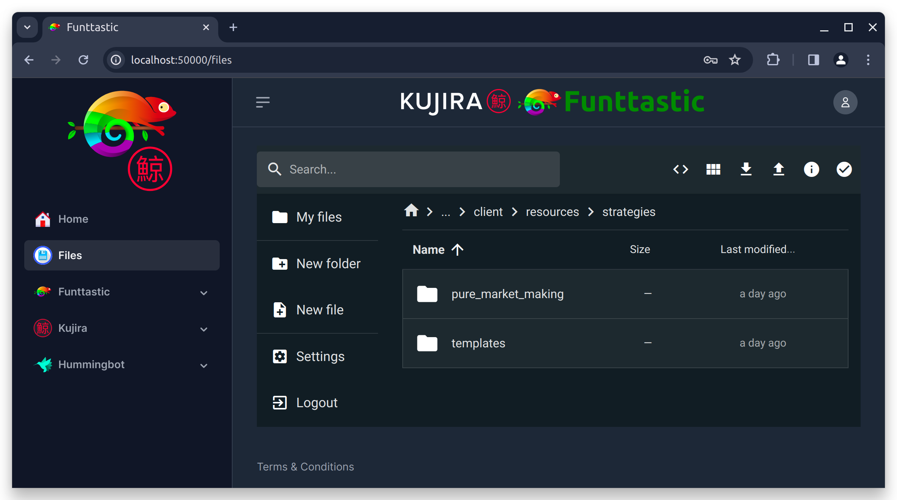The easiest way is to use our helper script:
./configure
and go to the "Actions", then "Add Wallet".
You will need to inform your mnemonic, then your wallet will be encrypted and saved in this folder:
shared/hummingbot/gateway/conf/wallets/kujira
You can also do that using the Hummingbot Client terminal or calling the Hummingbot Gateway or Funttastic Hummingbot Client API directly (for example using curl or Postman).
You need to navigate to
shared/funttastic/client/resources/strategies/pure_market_making/1.0.0
there you can configure your Supervisor (supervisor.yml) and your workers (workers/01.yml, etc.).
You can use the workers/common.yml file if you want a configuration to be replicated to all your workers. If a specific worker has a different configuration, the worker configuration will then apply.
You can access our playlist explaining how to configure several aspects for the bot:
More tutorial videosOpen the following configuration file:
shared/funttastic/client/resources/configuration/production.yml
You are enabling telegram, we recommend changing to `true` the following:
logging.use_telegram telegram.enabled telegram.listen_commands
Add your telegram token to:
telegram.token
and your telegram channel chat id to:
telegram.chat_id
In order to add funds to your wallet, you can use a faucet inside the Kujira Discord.
To join their discord you can use this link:
https://discord.gg/teamkujiraAfter joining and doing their verification process, you can look for this channel:
#public-testnet-faucet
Or try this link:
https://discord.com/channels/970650215801569330/1009931570263629854Then you can use the following command there:
!faucet <change to your Kujira wallet address here>
If you need more info you can contact us here:
https://funttastic.com/discord